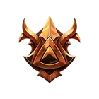
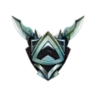
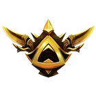
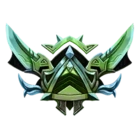
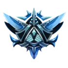
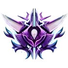
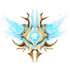

Juega a ser dios en SMITE , el MOBA de acción gratuito con iconos mitológicos legendarios . Empuña el martillo de Thor, convierte a tus enemigos en piedra con Medusa o desata tu poder divino con uno de los más de 100 dioses jugables. ¡Sea cual sea tu nivel, en SMITE hay algo para ti! Si acabas de llegar a SMITE, estás en el sitio adecuado. Explora las siguientes páginas para aprender los conceptos básicos del juego, conocer a los dioses y los modos y luego únete a los más de 35 millones de jugadores que forman nuestra comunidad. ¿A qué estás esperando? Adelante. ¡Juega a ser dios!
Con una lista cada vez mayor de más de 100 dioses que se extienden a través de los numerosos panteones de todo el mundo, queremos que te sientas capacitado para dominar el campo de batalla con un conjunto único de personajes jugables. ¿Tienes curiosidad por ver qué dios se adapta a tu estilo de juego? ¡Haz clic aquí para saber más!
¡Controla todas las mecánicas de juego, como las habilidades, los objetos y nuestro sistema de comunicación , para ayudar a tu equipo a alcanzar la victoria! ¡Haz clic aquí para aprender los conceptos básicos!
Hay varios modos de juego disponibles en SMITE que se adaptarán a las preferencias individuales de cada jugador, así que echa un vistazo a cada uno de los diferentes modos y elige el que mejor se adapte a tu estilo de juego.
Debes ser nivel 30.
Mínimo 20 dioses maestría 2 o superior.
Haber jugado minimo 30 partidas de conquista normal.
Se banean 10 dioses.
Hay 7 divisiones en cuanto al ranking.
| Bronce | Plata | Oro | Platino | Diamante | Maestro | Gran Maestro |
|---|---|---|---|---|---|---|
 |
 |
 |
 |
 |
 |
 |